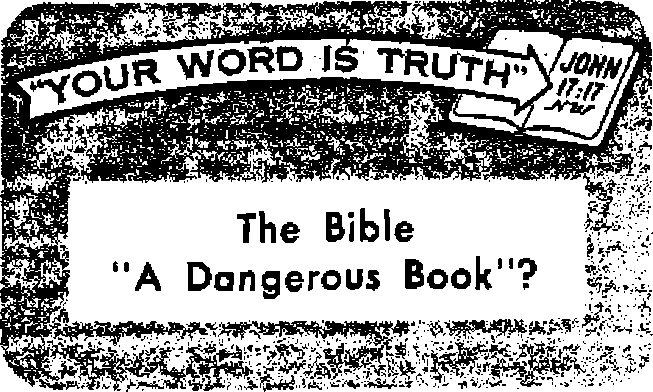

WHAT IS YOUR RELIGION DOING FOR YOU?
True religion’s place in your life
Save Parks from Becoming Slums
Scenic beauty is being sacrificed
What’s Wrong with Our Calendar?
Problems and changes, both past and present
Disunity Within Judaism
News sourcag that ar« able to ke«p you awake to ths vital Issum of our times must be unfettered by censorship and selfish interests. “Awake)" has no fetters. It recognizes facts, faces facts, is free to publish facts. It is not bound fry political ambitions or obligations j it is unhampered by advertisers whose iocs must not bs troadsn on; it is unprejudiced by traditional creeds. This journal keeps itself free that it may speak freely to you. But it does not abuse its freedom. It maintains integrity to truth.
“Awake P uses the regular news channels, but is not dependent on them. Its own correspondents are on all continents, in scores of nations. From the four corners of the earth their uncensored, on-the-scenes reports come to you through these columns. This journal’s viewpoint is not narrow, but is international. It is read in many nations, in many languages, by persons of all ages. Through its pages many fields of knowledge pass in review—government, commerce, religion, history, geography, science, social conditions, natural wonders—why, its coverage is as broad as the earth and as high as the heavens,
“Awake I” pledges itself to righteous principles, to exposing hidden foes and subtle dangers, to championing freedom for all, to comforting mourners and strengthening those disheartened by the failures of a delinquent world, reflecting sure hope for the establishment of a righteous New World.
Get acquainted with “Awake!" Keep awake by reading “AwakeI”
Published Semimonthly By
WATCHTOWER BIBLE AND TRACT SOCIETY OF NEW YORK, INC.
117 Adams Street
N. H. Know, President
Printing th J* issue i 1,800,000
Otbw limufM Is w*lrt “Awih!" It piblliM: Stalnwatlilr—AtrtksUH, FSnnbb. Macb, Otrmto. HollandUb, lUUin, NonMian, Spinisb, Swedish. Htnthly—Panish. Greek, Japan™, PortiuiKse, Ukrjiniati.
Often Yaatlp rabacrlptlcm rate
Arirtea. U.I., lit Adams St, Brooklyn 1, N.Y. |1 Atstralia, 11 fierafort Rd., Btrithfielri, N S W. 8/-CjtMdt, ISO Bridgelind Aw., Park Raad P.O.,
Torcuto 10, Ontario 11
tfiplind, 34 Craven Terrace, London, W. 2 V-Miw Zealand, G.P.Q, Bax 30, Wellington, C. 1 7/-fiMtb Afritt, Private Rag, EWsfonleith TtI. 7/-
Entered aa BMCmd-cJass
Brooklyn 1, N, Y,, U. S. A. Grant Suiter, Secretary Fivs cents a copy
RimltfasMt should be snt to oftkv to yt«r ctm-try to compliance with mulattos to guarmtee safe delivery of money. Remittances are accepted at Brooklyn from countries where no office la located, by International money order only, Subscription rates to different countries are here stated to local ctttTency. JiatlM ef expiration {with renewal blank) le sent at leaat two Innes before subscription expire*. Chanje af when sent to our office
may be expected effective within one znonlh. Rend your old aa well as new addraa.
X-T. Printed to C.S.A.
CONTENTS
What Is Your Religion Doing for You? 5
Save Parks from Becoming Slums
What’s Wrong with Our Calendar?
Irradiated Foods Stay Fresh Longer
“Your Word Is Truth”
Jehovah’s Witnesses Preach in All
Do You Know?
Watching the World
1 DISCONTENT
/ NOUGHTS well expressed often cap-f tivate the ear. But that does not mean that they are true. Thus some poets wax eloquent in the praise of discontent. “The splendid discontent of God with Chaos,” says one, “made the world; and from the discontent of man, the world’s best progress springs.” And says another: "To be discontented with the divine discontent is the . . . first upgrowth of all virtue."
In commenting on the poet’s “divine discontent,” the editor of America’s leading business journal, fortune, December, 1955, stated that in spite of all the scientific progress man could hope to make he will always be unhappy, for “no conceivable Utopia on earth will satisfy man,” Why? Because, according to him, man will ever be plagued with such questions as ‘What is the meaning of life and its purpose?’ and “Who invented this impossible puzzle and how came it to be?”
Does man’s discontent come from God? Is it godlike? Absolutely not! Not discontent with Chaos—there never was a Chaos in the orderly outworking of Jehovah's purposes regarding the universe—but unselfish love and the sheer joy of creating caused God to make the heavens and the earth. He ever was and always will be perfectly contented, self-contained. He is “the happy God."—1 Timothy 1:11, New World Trans.
God’s Word also shows that his Son, Jesus Christ, in his prehuman existence as the Logos, far from being discontented, was daily his Father’s “delight, rejoicing always before him," and that he delighted to do his Father’s will while he was on earth. All the faithful angels likewise were and are without discontent. They delight to serve Jehovah. The record tells us that they “sang together” and “shouted for joy” at the time God “laid the foundations of the earth.”—Proverbs 8:30; Job 38:7, 4.
Nor did the first human pair have any grounds for discontent because of not knowing the meaning of life and its purpose. Appreciating their need of knowledge and their capacity for reasoning, God at the very beginning made known to them his purpose in creating them: “Be fruitful and become many and fill the earth and subdue it, and have in subjection” all the lower animals.—Genesis 1:28, New World Trans.
The Bible shows that God also revealed his purposes regarding man to Enoch, Noah, Abraham -and to the nation of Israel by Moses and other prophets. And in particular has he given the followers of Christ a revelation of his purposes. All this
information has been recorded in God’s Word, so it is our own fault if we discontentedly ask: “Who invented this impossible puzzle and how came it to be?”
Not from Jehovah God but from his adversary does man get his discontent. It was Satan’s consuming ambition to be like his Sovereign that caused discontent to enter the universe in the first place. And discontent entered the earth only when Eve allowed Satan to plant the seeds of ambition in her h«art, to be like God. Discontent caused certain angels to leave their heavenly positions, comedown to earth and marry the daughters of men. The poet may say: “Noble discontent is the path to heaven,” but in their case it was just the opposite, the path from heaven to earth. None of God’s intelligent creatures have any just grounds for discontent. Discontent shows a lack of wisdom, gratitude and love, and reflects upon a beneficent Creator.
God created man in his image, also to be contented and happy, and all persons who appreciate God’s gifts and are acquainted with His purposes are contented even among such sorry conditions as now prevail. That, however, does not mean that they are not looking, working and praying for a better world, God’s new world. They are. But while awaiting God’s due time to usher in this better world they do not discontentedly chafe, grumble, fret, complain and rebel. Realizing that its seeming delay is serving wise divine purposes, and having the necessary things to sustain life, they are content. Theirs is the great gain that comes from "godly devotion along with self-sufficiency.”—1 Timothy 6:6-8, New World Trans.
They know that soon the will of God will be done on earth as in heaven. That will mean a new world in which man will gradually be uplifted to mental, moral and physical perfection. Nor will the discontent of boredom mar that perfect world so free from all strife and mishaps. God gave his intelligent creatures an insatiable curiosity, a hunger and thirst for knowledge. Thus perfect mankind will ever be learning new things, acquiring new skills, thereby having their lives made ever richer and fuller and more beautiful.
The contentment and happiness of those now who understand Jehovah’s purposes and appreciate his gifts are proof that God did not create man with any “divine discontent” and that in his new world so near at hand there will be no "divine discontent,” for all then will be contented with their lot and knowledge, ever a praise to their Creator, Jehovah God.—Psalms 148 and 150.
The Machine Mind
C For some time science has been talking about machines that do what men can do. Now a professor from Harvard University is talking about men who could become machines. Professor B. F. Skinner says the world now is entering the age of chemical control of human behavior. In the not-too-distant future, he says, the emotional conditions of normal daily life probably will be maintained in any desired state through the use of drugs. Dr. Skinner says that mankind always has been under some form of control or influence by other men. But in the future, Dr.
Skinner said in a lecture at the New York Academy of Science, controls will be more scientific and more sure in their effect. He cites one example. He predicts that pills eventually will be developed that will make fearless heroes of any and all soldiers whether they wish to be heroes or not. He says the drug would eliminate all signs of fear In the individual, sending him into battle as the perfect fighting machine.
Churches are crowded. Yet morals get lower, crimes increase and corruption runs rampant. Does this mean true religion is not a force in the lives of men?
Up ELIGION is gaining ground," f\. said Dr. Henry P. Van Dusen, president of Union Theological seminary. "Morality is losing ground.” "This conflicting condition,” he said, “Is one of the most surprising and overlooked facts in America today.”
Since 1926, church membership has grown twice as fast as the population, while morals have become increasingly weak. From 1950 the population of the United States has increased 5 percent, but crime has jumped 20 percent. Divorce has shot up from one out of six marriages in 1940 to one out of four today. Juvenile delinquency has multiplied. Close to 300,000 children are called into court each year. Persons under twenty-one represent more than 50 percent of the arrests for crimes against property. The arrests of women for serious crimes are increasing at a shocking rate. Racketeering and violence, alcoholism, narcotic addiction and corruption in public affairs are {ill increasing or are widespread. “Religion,” said Dr. Van Dusen, “is, normally, the parent and sustainer of morals, but thus far, the return to religion in our day has produced no corresponding moral fruitage.”
In the heart of the nation’s capital, Washington, D.C., churches are full, yet the city is depicted as a moral hot spot, a “Babylon on the Potomac.” In one American city more than a dozen preachers of various religions were arrested as sex deviates in a single police raid. In Montreal, Canada, a Roman Catholic priest pleaded guilty to five charges involving traffic in narcotics. He Confessed that he was a key figure in the biggest narcotics ring, ever uncovered in that city.
Roman Catholic chaplain George B. Ford, an authority on social matters, is on record as admitting that more than three fifths of the juvenile delinquents arrested in New York city in the early part of one year were Roman Catholic in faith. This figure becomes more shocking when we learn that only about one fifth of the total population of New York city is Roman Catholic.
Other statistics show
that an abnormally high proportion of prisoners In the nation’s prisons are very religious and devout churchgoers. During a striking two-year period when Clinton and Sing Sing prisons were being flooded with Roman Catholic and Protestant law violators, not one committed in these prisons during this time claimed to be “pagan.” All of them without exception professed being very religious.
What is their religion doing for them? It is evident that church attendance in itself is not an index of religious conviction. As Dr. Charles B. Templeton, full-time revivalist of the National Council of Churches, New York, observed: “There is no revival, no depth of influence being exerted by the churches,"
Therefore, we ask: What is your religion doing for you? Is it developing in you a new personality that is not conformed to this system of things with its crimes, moral decline and corruption? Or do you still find yourself as you always were, up to. your neck in the same worldly ambitions and lusts? Has your religion given you a greater capacity for making and keeping true friends? Has it empowered you with a desire to love, as Christ loved; to be kind, as Christ was kind; to be generous, as Christ was generous? Does your religion help you to do honest business with your fellow man? Or is your religion confined to the church on Sunday and when out of church is religion a case of “out of sight out of mind”? Does your religion help you give your employer an honest day’s work? Does it make your home more harmonious, your life more orderly, your children more loving?
Does your religion make your car safer for those on the highways and for the pedestrians on the streets? Does it open your purse to the needy? Does it make you humble with your opinions? Does it inspire you to do good to others? Does it help you to see the beauty of God’s creation around you? Does it make you passionately eager to want to know God, to serve him, to praise his name, to tell of all his wondrous works? Does it fill you with genuine love for other people, regardless of their race, creed or nationality?
Does your religion give you peace and joy when you practice it? And does it prick your conscience when you fail to do right? Does it give you hope, faith and courage to press ahead? Does it fill your life with understanding and your heart with love for God and man? If it does, your religion is a power to you. You are a power for good and righteousness.
The religion of Christ, the Christian religion, exerts this power.
Transforming One's Life
The apostle Paul, discussing the transforming power of the Christian religion, said that those taking it up die to their former course, but become alive to do the will of God. They say, as did Jesus: “Let, not my will, but yours take place.”—Luke 22:42, New World Trans,
To this end they train their minds on things above, not on the things upon the earth. They deaden their bodies as respects fornication, uncleanness, sexual appetite, hurtful desire, and covetousness, which is idolatry. That is the way some formerly behaved, but Christianity has brought a change in them, as Paul says: “In those very things you, too, once walked when you used to live in them. But now really put them all away from you, wrath, anger, injuriousness, abusive speech, and obscene talk out of your mouth. Do not be lying to one another. Strip off the old personality with its practices, and clothe yourselves with the new personality which through accurate knowledge is being renewed according to the image of the one who creat-
ed it.”—Colossians 3:1-11, New World Trans.
That there must be a complete change of personality from this old world and its fleshly, lustful habits there cannot be the slightest doubt. To the Corinthians Paul wrote: “Do not be misled. Neither fornicators, nor idolaters, nor adulterers, nor men kept for unnatural purposes, nor men who lie with men, nor thieves, nor greedy persons, nor drunkards, nor revilers, nor e?dortioners will inherit God’s kingdom. And yet that is what some of you were. But you have been washed clean, but you have been sanctified, but you have been declared righteous in the name of our Lord Jesus Christ and with the spirit of our God.” Only the Christian religion is powerful enough to transform your life to this extent. It will, if you will let it.—1 Corinthians 6:6-11, New World Trans.
Prove Yourselves Christian
If Christendom's religions be Christian, then let them do as Paul says, wash themselves clean of worldly filth and corruption. Let them stop killing one another as they did during World Ware I and II, when Catholic on one side killed brother Catholics on the other .side of the battle lines, and the Protestants bn one side slaughtered those of the same faith on the other side. If the Lutheran, Methodist, Baptist, or any other religion of Christendom be truly Christian, let them stop hating one another; let them stop hating Jehovah's witnesses, who preach God’s kingdom; let them love even as Christ loved; let them do good even to those who despise and hate them, as Jesus commanded; let them stop robbing and cheating one another in the business world; let them stop committing adultery and fornication! Stop their hobnobbing with corrupt politicians and greedy commercialists of this world! Stop being conformed to this world’s image! Let them stop lying, cheating and coveting! Let them speak the truth in everything, anywhere and everywhere! Let the force of Christianity be made manifest in deeds and not in words only. Let the daily lives of the churchgoing millions testify whether Christendom’s religions are Christian or not. For said Jesus: “By their fruits you will recognize them.”—Matthew 7:16, New World Trans.
Alas! Christendom’s religious fruits are bad. Her churches are packed to overflowing, but she has little good to show for it. Dr. Robert J. McCracken charged at New York’s Riverside church that a “large proportion” of the 54,000,000 Protestants in the United States are Christian in name only. He declared that these nominal Christians are “ignorant of what Christianity stands for in some cases, apathetic and indifferent in many more, not making anything like the difference they ought to make, not lifting the level of personal and public behavior, their religion a religion sft secondhand.”
Dr. McCracken described the current revival as “depressing.” “There is a disturbing discrepancy between the strength of the churches and their influence on American life,” he said. "They are not the dynamic force for civic righteousness that they should be but are for the most part a quiet and moderating influence, not the opiate of the people, as Lenin put it, but, equally, they are not much of a stimulant.” He defined secondhand religion as' "an attachment to Christianity that is traditional and conventional and at the moment fashionable, a matter of good form, not a life commitment.”—The New York Times, May 16, 1955.
Paul counsels Christians to keep testing their religion, to keep testing themselves to see whether they are in the faith, “keep proving what you yourselves are.” Test yourself to see whether your religion has
helped you to strip off the old personality with its practices, whether it has helped you to clothe yourself with a new personality that conforms to the pattern laid down by Christ. If it has, there will be a marked change in your personality. You will be clothed with tender affections of compassion, kindness, lowliness of mind, mildness and long-suffering. You will continue to put up with one another and forgive one another freely. You will clothe yourself with love, for it is a perfect bond of union.—2 Corinthians 13:5; Colossians 3:12-17, New World Trans.
An Everyday Religion
Christianity is more than a Sunday religion. It is a religion for everyday living. It is more than a matter of form; it is a life patterned after Christ. It is a religion of action, power and spirit. Before you can mean anything to Christianity, it must first mean something to you. Before Christianity can bless your home, you must first let it bless you. You must let it influence you in the paths patterned after Christ. Otherwise you will not make progress. Unless you let Christian truths transform your life, you cannot prove to yourself the good and acceptable and complete will of God so essential to salvation. Your religion will be all form, a fashion parade, a mockery in the sight of God.
Follow the apostle's advice: “Put away the old personality which conforms to your former course of conduct and which is being corrupted according to his deceptive desires; but that you should be made new in the force actuating your mind, and should put on the new personality which was created according to God’s will in true righteousness and loving-kindness.” If you do this, you will find that true religion is still “the parent and sustainer of morals,” and an incomparable stimulant and influence toward right doing, which leads to everlasting life.—Ephesians 4:22-24, New World Trans.
V Not having a tail, you do not worry about such a calamity. But such an event is of concern to the common lizard of Africa, and if you asked him what he would do under the circumstances he would confidently answer: “Why, grow another one, of course.” No, this is no boast. The ability to throw off parts of the body and regrow them is found in animals such as sea stars, crabs and spiders as well as lizards.
The lizard casts off his tail as a result of nervous excitement caused by fear. After being severed, the tall bounds about by itself for a time in a flurry of excitement while the lizard lies quiet or steals away out of sight. So it seems that tail-casting is a maneuver to distract the enemy’s attention while the lizard gets safely away.
The very neat mechanism that allows the lizard to perform this intriguing act of surgery shows the marvelous ingenuity of the Creator of all living things. There is a definite breaking plane. In a lizard that has never cast his tail before this can be seen by a ring round the tail that is free from scales. At this point the vertebra is split nearly across. Thus it is ready to be detached by a quick switch of the tail. The spinal cord at that point narrows almost to a thread and so no damage is done to this essential part. Blood vessels in this region are constricted and when the tall parts they are automatically ligatured, and the muscles here are dovetailed so that there is no tearing of them.
And having shed his tail, then what? Our reptile friend lives up to his boast and grows another!
Service director, Conrad L. Wirth, “that they amount to outdoor slums.” He further stated that under the present park program, where only one cent of each $150 in the Federal budget is devoted to the national parks, it Is Impossible to provide essential services; that “visitor concentration points can’t be kept in sanitary condition. Comfort stations can’t be kept dean and serviced. Water, sewer and electrical systems are taxed to the utmost. Protective services to safeguard the public and preserve park values are far short of requirements. Physical facilities are deteriorating or are inadequate to meet public needs. Some of the
MgAVE” is not too strong a term to use, said a ranger, when we speak about preserving the magnificent wonders of our national parks from vandals and from commercialization. Last year over 50,000,000 people flocked to the park sanctuaries in the United States to find the quiet peace and inspiration that their pioneer ancestors knew. This year an even greater number of visitors are expected. And park authorities foresee some 80,000,000 people yearly stampeding over the country’s 24,000,000 acres of park land by 1966.
To try to accommodate even half that number of visitors in facilities that, in 1932, were designed to care for three and a half million and that have not been materially expanded since is like trying to cram an oversized elephant into a dainty china closet without suffering calamitous consequences. The tragedy of overcrowding has already left its mark on the national parks. “Some of the camping grounds are so crowded,” said the National Park camps are approaching rural slums. We actually get scared when we think of the bad health conditions.”
A multimillion-dollar program to protect, improve and develop the parks is now being considered by Congress. This program contemplates the spending of $786,545,600 in ten years. Park director Wirth called it "a realistic program,” aimed at remedying the deplorable conditions created in many park areas by years of war-imposed economies, followed by an overwhelming postwar increase in visitors.
Need for Emphasizing Intangible Values
However, money alone will not save the parks from becoming slums. Unless there is developed a proper public concept of the real meaning of the national parks and how they should be used, it is very possible that much of their natural, unspoiled beauty wall ultimately be destroyed, regardless of the hundreds of millions of dollars poured into them for their improvement.
Warning against the disastrous consequences of overstressing the physical attractions of the parks without properly emphasizing their higher, inspirational intangible values, is the National Parks Association president, Sigurd F. Olson. He said: “Half a century of travel advertising has stressed the physical attractions of the parks without emphasizing their spiritual and Intangible values. As a result many people have come to regard the national parks as playgrounds. Awe-inspiring spectacles are often seen merely as curiosities. With this attitude, vandalism and carelessness have become major evils and refuse disposal a major problem.”
Unless the American people develop a more appreciative regard for the parks’ spiritual and inspirational value the determination to preserve these wonders unspoiled will not be present. Visitors will come to regard the national parks as they do their big city parks, merely as amusement and recreation centers. The demand for more movie houses, dance halls, golf links, tennis courts and cocktail lounges will increase. “After all,” the people will say, “aren’t we out here to have a good time?”
The Orif/inal Concept Lost
Originally, the national park lands were set aside to “conserve the scenery and the natural and historic objects and the wildlife therein ... by such means as will leave them unimpaired for the enjoyment of future generations,” according to the National Park Service Act of 1916. Unless there is an immediate rededication to this original purpose, there will be little left for future generations to see, because there is a continuous commercial undermining of this original concept.
For example: In the heart of all natural wonders, Yosemite National Park itself, once precious for its inspirational mood, is now advertised as “California’s All-Year Playland," where you can play tennis, swim in tiled pools, dance to live music and have real city fun. “This spot,” says an authority, “which Theodore Roosevelt once called the most beautiful in all the world, now boasts three acres of burning dump and smog. Lovely meadows, once favored by artists, have been paved with eleven acres of macadam to provide parking space. Warehouses and stores obstruct famous views.” Tank trucks sprinkle water in vain to keep down the dust. Campers line up twenty deep for the toilets. Bright white lights at night transform the valley into a city festering with ugly commercialism. Souvenir stands and refreshment centers carry on full blast. Swarms of people move restlessly about. Dance pavilions throb with hot rhythms. The whole concessionaire area takes on a carnival spirit. “It’s like Coney Island,” said a Department of the Interior investigator, “so crowded you don’t even feel you’re outdoors."
The prevailing attitude, principally among the younger generation that visits the parks, is so completely foreign to the original concepts that it makes one wonder why they bother to come to the parks at all. For example: At the glorious Glacier National Park a visitor who found no place to dance asked: “What are you supposed to do—look at the scenery’^’ To behold the awesome, massive beauty of hundreds of waterfalls hurling themselves downward from a dozen white glaciers glistening in the sun was not enough to rivet the attention of this pleasure seeker, A dance floor was lacking.
In the presence of the breath-taking giant sequoia trees, a group of young mothers inquired: “Where are the merrygo-rounds for the kiddies?” At the Grand Tetons a couple in a flashy car told a ranger: “The devil with the scenery. Aren’t there any good shows around
here?” Another party, in the presence of Mt. Rainier, yelled out to a park officer: “Hey there! We’ve come all the way from Chicago, what’s there to see here?"
Erosion Resulting from
Improper Emphasis
With this unappreciative attitude, vandalism and carelessness have become major evils and refuse disposal a serious problem. In Yellowstone National Park, where the earth lets off steam, stood a big fat man gazing at crystal-clear Morning Glory pool, most beautiful of pools. “Pretty, isn’t it?” he said as he tossed his filthy cigar stub into it. Suppose the 16,435 people that saw the pool that day threw a cigar stub or a beer can into it, or into any of the pools; how long would they remain as treasured beauty spots?
But cigar stubs and beer cans are mild, to compare with some of the things thoughtless people toss about the camp. It costs the park over $300 a day to pick up the trash. “People must think these pools are garbage cans," said a park official. Below the ledges, many pools, which were once white and clean beneath blue water, are now covered with a scab of dirty brown pennies, befouled with beer cans, pop bottles, sodden cracker boxes and other garbage. “If you’ll pardon me for saying so,” said a ranger, “some of these pools look like unflushed toilets."
Others must scribble their names on everything or walk away with souvenirs. There are those who dig up plants and trees. Some come armed with shovels; others dig with tire-changing tools, screw drivers and knives. One woman even used her knitting needles to loosen the dirt around a tempting plant. Professional criminals are growing in proportion to the crowds, evidently figuring the park areas to be easy pickings. One park authority made the statement that on some days he thought the parks were “overrun either by Ignoramuses" or by “kleptomaniacs keeping in practice while on vacation.” It was hard to tell which.
As crowds increase the job of policing the grounds becomes more difficult. Yet Yellowstone National Park, with six times as many visitors last summer as in 1931, had 20 fewer rangers on hand to handle the traffic, prevent thievery and vandalism and protect against forest fires. Twice as many visitors swarmed into the Yosemite valley last year as in 1941; still there were fewer rangers on hand to handle them. At one park a visitor spent three days on a trail without seeing a ranger. More rangers and naturalists are urgently needed.
Hom to A ppreciate the Parks
Today the problems peculiar to one park are like those of almost all other national parks. There are far too many people with too few facilities and personnel to handle them. To prevent the parks from being stampeded to death by millions who have no regard for them, an entirely new concept of their higher inspirational and spiritual values must be emphasized. This means restating constantly that travelers bent on recreation and amusement, who are seeking diversion in the form of swimming, golf, dancing, movies, tennis, etc., can find them amply provided in places other than national parks developed primarily as places for inspirational and educational purposes.
This concept, however, in no way interferes with those who desire to flee congested cities to the parks for relaxation. Rather, it emphasizes the need of preserving the pristine grandeur of the national parks for this and future generations, for those who derive refreshment In the quietude of unspoiled natural spaces.
Among these prize natural wonders it
is the little things, the sights, the sounds and the smells, that often create the lasting impressions. City visitors must allow some time for the city to wear off and time for the body to absorb the natural surroundings. Those who flitter from park to park, trying to see so many places in a limited time, return hdme confused, not understanding or appreciating all they have seen. It is better to select only one or two parks, at most, for a vacation. Upon arrival, get out of the car, get away from the main roads as far as you can, several hundred yards at least. Spend some time on the trails. This will result in a whole new concept of the parks.
Take your time as you move about the park. Hurried visitors often miss the best the parks have to offer. Full inspiration comes to those who have a more lingering contact with nature. Listen to the symphony of the outdoors, to the songs of birds, to the rustle of the leaves; smell the scented trails; thrill in seeing the carpets of blue lupines, the fields of white phlox, the rolling hills of yellow buttercups and the plumes of bear grass sprinkling the deep green meadows; study the graceful swan on a glimmering lake, or watch the nimble bighorn sheep up among the massive peaks; delight in the dozens of crystal rivulets cascading downward to splash in sparkling diffusion; feel the power in the thunder of a waterfall; gaze up through the giant timbers at an eagle soaring high in a sea of blue; sense how silently billowy clouds slip by.
Here is quietude away from the turbulent world of civilization, where wonders that measure into the thousands of years cause the pressures of modem life to fall away. Wrote John Muir: “Climb the mountains and get their good tidings; nature’s peace will flow into you as sunshine flows into trees. The winds will blow their own freshness into you and storms their energy—while cares will drop off like autumn leaves.”
Here in nature’s wonderland, alone with God, contact is made with immensity and space, where serenity and equilibrium are regained. Here is peace. Here is a solitude that is soothing, that is deeply enriching and everlasting. Here are literature, music and art in their highest forms—rare, magnificent treasures, precious masterpieces, superlative gems, contributions all to the highest thoughts of man—the inspirational, the spiritual.
It would be a pity to permit these sanctuaries to deteriorate into carnival side shows. Preserve them for their crowning value. Save them to inspire thoughts and praise of the God who made them: “O Jehovah, how manifold are thy works! In wisdom hast thou made them all: the earth is full of thy riches.”—Psalm 104:24, Am. Stan. Ver.
NO ONE STOOD UP
There is a story circulating throughout Moscow. Moscow diplomats believe it to be fictional but especially apt. Reported the New York Times of March 26, 1956: "'During Communist Party Secretary Nikita S. Khrushchev's denunciation of Stalin at the Twentieth Party Congress last month he is said to have received an anonymous note reading: 'What were you doing when Stalin was alive?’ Mr. Khrushchev read the note to the Congress and said: 'There is no signature on this note. Will the author please stand up?' No one stood up, 'I will count to three/ Mr, Khrushchev said. 'Then let the author rise/ Mr. Khrushchev counted to three. No one stood up. 'All right, comrades/ Mr. Khrushchev said, 'Now you know what I was doing when Stalin was alive. I didn't stand up either/ “
Perhaps you have never stopped to give it much thought, but the calendar is not the same as it used to be, nor is it the same as it probably will be in year? to come. Everyone uses it. Many persons carry a small one in their wallet; others have one or a dozen hung on the walls of their homes. But do you know why
WITH OURtjf calendar?
to mark time, sets off periods that neither divide evenly into the tropica] year nor can be divided evenly by the number of solar days in a month, and you will have a view of the principal problems that confront calendar makers.
As has been noted, calendars are nothing new. They have been used since earliest times, even
it is the way it is and why there is now discussion about changing it? AsC. R. Decker, editor of the Journal of Calendar Reform, said: “The calendar, one of the earliest of man’s inventions, has been subject to change after change and still is not satisfactory.” Why so much difficulty?
The natural unit of time measure is the day, fixed by the rotation of the earth on its axis, and surely no one would attempt to establish an arrangement that ignored that fact. Another natural unit of time to which our calendars endeavor to conform is the tropical year, governed by earth’s revolution about the sun. If this were not so, the seasons would -come at varying times on our calendar each year. Rut a problem arises in that the day, which is twenty-four hours long, cannot be equally divided into the tropical year of 385 days, 5 hours, 48 minutes and 45.51 seconds. Add to this the fact that the moon, the other outstanding heavenly body commonly used since the days of Adam. The prerequisites to a calendar are writing, the knowledge of an astronomical period and its value in timekeeping, and a fixed date for a starting point.
Adam had these. He knew the art of writing, himself composing a historical record. (Genesis 5:1) He surely knew the value of the heavenly luminaries for timekeeping, for he evidently recorded Jehovah’s statement: "Let luminaries ... make a division between the day and the night, and they must serve as signs and for seasons and for days and years.” (Genesis 1:14, New World Trans.) As for a starting date, what could serve better than the very start of human life, the time of Adam’s creation? So we are not surprised to note in the account in Genesis chapters 7 and 8 that Noah used a very definite calendar arrangement, marking off his time into seven-day periods and thirty-day months, which, instead of being named, were numbered.
It has long been a practice to mark time by outstanding events that regularly recur. For example, those who live close to nature often use the times of seed-sowing and harvest, the spring rains, blackberry month, calving time, or the full moon to mark time, just as you might use the name of a month for the same purpose. However, it is even more prominent in historical records that events were often dated according |o the life of an outstanding individual of the time. The Flood, we are told, came “in the six hundredth year of Noah’s life.’’ (Genesis 7:11) In the “first year of Cyrus king of Persia, . .. Jehovah stirred up the spirit of Cyrus” to make a proclamation concerning the restoration of the Jewish remnant to their homeland and the rebuilding of the temple there. (Ezra 1:1, Am. Stan. Ver.) And "in the fifteenth year of the reign of Tiberius Caesar, when Pontius Pilate was governor of Judea” John the Baptist began his ministry in the wilderness by the Jordan. (Luke 3:1, New World Trans.) This type of calendar, as indicated by the references given, was apparently carried over from the preflood world.
The earliest calendars dated from the fall of the year. Not until their exodus from Egypt did the Israelites change to another time for the beginning of their year. But then Jehovah God himself instructed concerning the spring month Abib: “This month will be the start of the months for you. It will be the first of the months of the year for you.” (Exodus 12:2, New World Trans.) Later on, when the Jews returned from Babylonian captivity in 537B.C., they were again dating from the fall, using the spring month only to mark the beginning of the sacred year for religious purposes, and the beginning of the regnal year of their kings. The Jews recognized the problems to be met in calendar-making, so, while they marked the beginning of each month by actual observation of the appearance of the new moon, they sought to compensate for the difference between this and the tropical year by adding, or intercalating, the extra month Ve-Adar seven times in each nine-teen-year period.
Let us briefly turn our attention to some of the other peoples of the world and observe the varied calendars that they employed. The Egyptians, for example, among the earliest in this field, set the beginning of the year by the heliacal (pertaining to the sun) rising of the star Sothis, which occurred about the time the Nile overflowed its banks. However, Sothis, or Sirius, rose the accumulated total of one day late every four years. The educated ones in Egypt came to know this, but they did not make any adjustment; so in 1,460 years, which is called a Sothic period, the beginning of their year went the entire round of the calendar, coming back at last to its starting point. That put their calendar just one year ahead of what it would have been if properly regulated.
The Mayans devised a marvelously accurate table of astronomical information that served their civilization in Guatemala and Yucatan. It is said that by means of their calendar any day in 65 million years could be identified. It called for eighteen twenty-day months in the year, with five extra days being added at the end to adjust the difference between the solar year and their calendar.
The Greeks, using their date for the origin of the Olympic games (776 B.C.) as a starting point, divided up the 30-day month into decades or 10-day periods. Later they alternated between 29- and 30-day months and finally, in the fifth century B.C., began to employ intercalary months on the basis of the 19-year cycle. This carried over to the Roman rule. But when Julius Caesar took hold of the problem of
calendar reform the situation was deplorable. The year consisted of just ten months, running from March through December. The time corresponding to January and February was ignored. It was wintertime, there was virtually no activity, so it had been felt that there was no need for a calendar. And by now the vernal equinox was falling about two months late.
Julian and Gregorian Calendars
The Greek astronomer Sosigenes accepted Caesar’s invitation to endeavor to adjust the calendar. What the Egyptians had observed to be true he confirmed, namely, that the year ran about 3651 days, but now he proposed that an extra day be added to the calendar every fourth year to compensate for that fraction of a day. Thus the Julian calendar brought in the use of leap years. While it was an improvement, still it left errors that would call for further adjustment in the future. The Julian calendar came into use in the year 46 B.C., which is supposed to be the 708th year from the founding of Rome. Later, along in the sixth century, a monk calculated what he considered to be the Christian era, and thereafter the dates of the calendar were changed to count from the date when Christ was thought to have been born.
There was no outstanding complaint against the Julian calendar until the sixteenth century. But by then the discrepancy in the Julian calendar that accumulated at the rate of one day every 128 years had moved the vernal equinox back from March 21 to March 10. Lilius, a physician of Verona, took hold of the situation and worked out a suggested alteration. Although he died, his brother presented the calendar to Pope Gregory XIII, whose name is now attached to it. In 1582 it was put into effect by papal proclamation, which suppressed ten days in October of that year. So the day after October 4 became October 15, thus restoring the equinox to its former position. The Gregorian calendar follows the same principle as the Julian except that an extra day, making a leap year, is added only to the years whose number can be divided by 4, and century years are common unless divisible by 400. That made the calendar quite accurate, allowing for an error of only one day in over 3,300 years.
However, should you Want a more precise system, you might consider the rule adopted in Russia in 1918: “Century years shall be leap years only in case their numbers when divided by nine give a remainder of two or six." This reduces the difference between the year as marked by our calendar and that marked off by the sun to one day in 29,000 years. Or there is the suggestion by Professor T. A. Bickerstaff, of the University of Mississippi: “Every year divisible by four shall be a leap year excepting years divisible by 27.” By this method there would be a difference of only one day in 90,000 years. For all practical purposes it hardly seems that any more precise rule is needed.
The World Calendar
Now once again there is a movement, in the U.N., toward calendar reform. This time, though, the effort is not to change the basic calendar arrangement. It is designed, rather, to eliminate the problems in our present calendar by making the same dates fall on the same days each year, making more nearly consistent the number of days in the months, and equalizing the number of working days in each quarter of the year. While there is particular advantage in the change for businessmen, the effect might be good elsewhere too. In India it is reported that there are now about thirty different calendars in use. The confusion is so great that even
from one village to the next a change in calendar is found. This has resulted in riots, because the people could not agree on what day a feast should be celebrated. How would the world calendar correct the situation? It would institute a uniform system that could be employed by the people of all nations.
So by means of the World Calendar it is proposed that, beginning in 1961, the first day of each year fall on Sunday. The first month of each quarter, that is January, April, July and October, would have 31 days and all the other months would have 30 days, with an extra day called “Worlds-day" added after December 30. The years that require it would have Leapyear Day, another "Worldsday/* added to the end of June. By thus not calling the two added days by one of the regular names of the days of the week, days and dates would correspond each year.
It might seem that it would be simple to put the new calendar into operation, but objections arise. It is not merely a problem of mathematical adjustment. The calendar has become a social institution, and such cannot be changed overnight. Some orthodox religious groups object to having the sequence of the seven-day week broken by “Worldsday,” With others it is a matter of apathy. But Mr. Decker nicely states the matter this way: “It is not a radical innovation; it is simply a refinement of the existing Gregorian calendar; it retains all the progress that has been achieved by calendar-makers in the past; it clears away the absurdities, and it makes much simpler the whole business and economic life of our country."
Whatever changes may be made, the real problem still remains the problem of agreement. No improvement of the calendar can be regarded as entirely successful unless it is generally accepted throughout the earth.
WHERE DOES THE CHURCH STAND ?
By “Await*!" correjpondent in Nonray +
<£ Bishop Johannes Smemo tried to give an | answer to that question in a discourse at the I joint sitting of the diocese council in Novem- | ber, 1955. He concluded that it does not stand | where it should. j
<£ As to why it does not, he said: "It was be- = cause those who should be the procl aimers I of God's law did not preach and live it so | forcibly as to strike our conscience as God’s I law. Maybe they did not dare to proclaim it | uncompromisingly as it is. Doing so always J brings opposition. Probably it also cohered | to the fact that the Christians themselves 1 were defiled by the trend of relativity. ... j For the greatest part we stuck to the well- I trodden paths and followed the course where | there was least opposition. We had no courage | to and did not want to start dealing with । unknown and difficult problems. We arranged impressive assemblies in our own J halls and even experimented on a few show- | windows. But mostly we sat and waited for the public to come instead of going out like advertising agents and canvassers. I use metaphors which I know seem to be in bad taste. However, this is not a time for fine taste or high ideals, but of getting things done/that mean salvation to people."
Quite a sizable admission! But more is required than merely admitting failures. One must meet the consequences. And since the church has not changed from the course Bishop Smemo describes, what should the people do? Revelation 18:4 (New World Trans.) instructs: "Get out of her, my people, if you do not want to share with her in her sins, and if you do not want to receive part of her plagues." Join with a people who do not follow the course of least resistance, who uncompromisingly proclaim Bible truths, and who, since Jesus and the apostles were "advertising agents and canvassers" for faith, do not consider following in their steps to be m any kind of poor taste!
pleasant temperatures for indefinite periods of time without the dread of their growing old, staling, molding or spoiling. They will stay as fresh as ever. With cheap, plentiful radiation on hand from atomic wastes, preservation of food by cold sterilization is predicted to outmode canning and freezing methods now used.
However, if you now own an icebox, freezer or a refrigerator, you had better hang on to it, because irradiated foods have still a long way to go before entering the commercial field. According to Dr. C. M. McCay of Cornell laboratories, it will be at least another two years before radiated foods will appear for commercial use—“first for grains and potatoes and then eventually for meats in about five years.” He said: “Radiation will definitely not entirely replace refrigeration.”
Atomic food preservation the-
IRRADIATED FOODS organic matter, food contains « growing microorganisms that
■ | Hr M ft Ji M sP°il it- These germs are either 0 killed or restrained in their
O_ _ ——— growth by canning or freezing.
MGERHowever, some few bacteria may survive and these begin to mul-
HOUSEWIVES, farmers, meat packers and food distributors are all talking about a new proc
ess that might revolutionize the canning and refrigeration industries and permit room-temperature storage and shipment of fresh vegetables and meat to all parts of the world without the need of refrigeration or the danger of spoiling. That new process of food sterilization is by atomic radiation. Food is exposed to electrons given off by a radioactive isotope until it becomes sterilized.
The experts say that soon now housewives will be ordering irradiated packages of such things as chops and steaks, carrots and cream puffs, Brussels sprouts and fresh asparagus, chicken and codfish cakes, etc., and stack them on pantry shelves in
tiply and eventually increase to a point where the food spoils. But when food Is exposed to atomic radiation, the rays penetrate the meat and kill all food-spoiling bacteria. When all bacteria are killed, the food is sterile and may keep for longer periods, if protected from the atmosphere in sealed packages or cans.
If food is irradiated in an airtight container, which will not allow other bacteria to enter, there is no reason why the contents cannot remain fresh indefinitely. Fresh meats, fruits and vegetables could be prepackaged and then sterilized. This would allow them to have a long shelf-life without need for refrigeration. It has been found possible to sterilize foods in every known type of container—metal, fiber, plastic or glass. However, under radiation ordinary glass turns a brownish shade.
Foods exposed to radiation are not made radioactive; therefore, they have no germkilling power. If left exposed on a shelf, irradiated foods will absorb germs from the air and spoil Since the food is not made radioactive, it is not harmful. It is safe to eat. “More than 1,000 experimenters already have munched radiated chow” without any noticeable ill effects. In experiments rats were fed a diet consisting entirely of nine irradiated foods for nine months. fJeports show that “growth, reproduction and performance of these animals was 'quite satisfactory.’ ”
The chief objection against irradiated foods has been the. production of off flavors, odors and discoloration. Especially is this true in meats and dairy products. Professor L. E. Brownell, supervisor of the University of Michigan laboratory, shuddered when he sniffed a highly radiated hamburger. “Sterilized meat smells like a dog when it comes in after a rain,” he said. “And it tastes about like it smells.”
Dr. Lloyd L. Kempe, associate professor in the University of Michigan Medical School, called the odor of certain irradiated foods “putrid." Dr. H. W. Schultz, food technologist at Oregon State College, listed milk, cheese, bananas, orange juice and some cured meat products as “notorious" examples of undesirable flavors when irradiated. Milk exposed to stiff doses of radiation smells and tastes something like garlic. And butter tastes rancid and looks like lard. However, Dr. Schultz said that a taste panel gave asparagus, bacon, green beans, beef liver, broccoli and some other foods a taste rating of “good.” Scores of research organizations are trying to solve the bad-odor and -taste problem, but so far without much success.
Professor Brownell stated: “At first we may have to be satisfied with low-level-radiation pasteurization of food rather than sterilization by means of heavy doses.” While lower doses of radiation seem to kill or slow down many of the food-spoiling bacteria, they do not appear to change the natural taste and smell of the food. Yet lower doses seem to lengthen many times the shelf-life of refrigerated and prepackaged fresh foods. Small doses of radiation do not kill all the bacteria. So the food is not fully sterilized, but only pasteurized. Spoiling is, therefore, not prevented, but merely postponed.
Eliminating Trichinosis
Irradiating pork with gamma rays definitely eliminates any danger of its transmitting trichinosis. Trichinosis, a parasitic infection contracted from eating contaminated and improperly cooked pork, now affects 16 percent of all Americans. One of the top authorities on trichinosis, Dr. S. E. Gould, declared that the disease may be completely wiped out by irradiating all hog carcasses in the packing house. Radiation “definitely kills trichini in pork,” stated Dr. McCay.
Despite the charge of radiation, experimenters say that “no radioactivity is induced in the pork and no harm results from ingestion of the pork.” And what is more, the flavor is not affected and the treatment is relatively cheap. A group of researchers at the University of Michigan has now calculated that this treatment should add only about two-tenths of a cent per pound to the meat.
A mild radiation dose will also kill all known insects that attack cereal grains. Dr. Bernard E. Proctor, head of the Massachusetts Institute of Technology's department of food technology, said that “such treatment can be accomplished by passing the grain in a thin layer on a moving belt under an electron beam. The speed of the belt can be regulated so that the grain
will receive the proper dose to kill adult insects, eggs, larvae or pupal forms. Doses are below those that would adversely affect the germinating ability of the grains if planted.”
Dr. McCay asserts: “With very modest radiation insects are'definitely destroyed without damaging foodstuffs. Radiation does prolong life of root crops, especially potatoes for storage. Present storage of potatoes can be prolonged from 8 months to*ll years by means of radiation.” Usually potatoes sprout or rot after six months. At the U.S. Atomic Energy Commission's Brookhaven National Laboratory on Long Island irradiated potatoes two years' old are still as good as new. The irradiated potatoes have a slightly different taste, but some who tasted them preferred them.
Fears of Irradiated Foods
Some fear that irradiated foods may produce undesirable effects in later years. W. B. Rankin of the Federal Food and Drug Administration declared: “Data are needed on .. . the possibility of the irradiated products being toxic (for example, capable of producing cancer over a long period).” Commenting on this the New York Times, July 24,1955, said: “The possibility that radiation may incite cancer in living animals cannot be dismissed. Experiments made in the United States and other countries with mice fed on irradiated food have not borne out this possibility, but they have shown that growth is retarded and that there Is a loss in activity and an increase in the death rate. The cause is not the formation of harmful products but the destruction of vitamins and other constituents of food.”
That atomic radiation partly destroys necessary vitamins besides killing harmful bacteria is a fact well known. Some authorities state that the loss in nutritive quality is “severe." For example, Science Digest for July, 1953, reported that “in the Columbia tests, 70 percent of the vitamin A in raw whole milk was destroyed by a six-hour exposure to the gamma radiation. During this period, 37 percent of the riboflavin (vitamin B-2) was destroyed, as was all the reduced ascorbic acid, a relatively unstable form of vitamin C.”
Professor McCay says that “two-thirds of the thiamine is destroyed in meat. This is about twice the destruction from cooking. Some of the other vitamins such as pyridoxine and riboflavin are also partly destroyed. Irradiated fats in meat tend to produce peroxide compounds which in turn destroy the vitamin E and part of the A.”
The results of the experiments conducted by laboratories both in the United States and in Britain over a period of years are promising, but by no means conclusive. Studies are expected to continue for at least another two years before any conclusive report will be forthcoming.
“Why Should Qod Intervene?"
<L “If America has an economic collapse, communism will overrun the earth unless God intervenes/’ Those words were spoken at a labor meeting in Tampa, Florida, by former United States Senator Claude Pepper, The Dania (Florida) PressRecord of November 11, 1955, in its column “Bays Cather’s Random Thoughts/’ commented on Senator Pepper’s statement: “ ‘Why should God intervene?’ I wish to ask. Do the powers that be in present governments consult God about how to govern the people? My experience is that they do like the people in Noah’s day, and like the Pharisees did Jesus of Nazareth. When you mention following the course laid out in the Bible, God's Word, they try to laugh you to scorn/’
Dropping in for Directions
Chief Warrant Officer Willie Windham broke up a tennis game in Washington, but all he wanted to do was ask for directions. Windham got lost in Washington recently while looking-for the Walter Reed Hospital. He thought he would ask for directions. Nothing unusual about this—except that Windham was flying a helicopter at the time. So he dropped in on a tennis court. With eyes bulging, the players gave directions. Then Windham whirled away as suddenly as he had come, leaving the players too flustered to continue the game.
.. t; On the Homa of a Dilemma
British glider pilot Jim Helder recently had an agon-% izing choice to make. Should he crack up in a cornfield ’, or land his bright-red glider in a smooth pasture occu-£ pied by two bulls? Jie chose the pasture. Jumping W from the glider he waved a big unfolded map at the X bulls. One retreated. But the other was unimpressed, and, like any self-respecting bull that sees red, charged full force at the delicate, 50-toot aircraft. After re-during the glider to splinters, the bull turned his at: ' tention on an auto that rushed into the pasture to <■ save the airman. The driver honked his horn to scare ;■? the bull. But the bull had a horn or two himself. Ue ‘■! aimed them and charged, smashing a hole in a trailer , behind the auto before the men got away. If there is any moraf to the story, it must be: never get caught on the horns of a dilemma—or a bull.
3J Not Speeding, Ju»t Flying Low
On the New York State Thruway a state police car was chasing a speeder. As the speeder was almost within the arms of the police, something struck the aerial of the police caret all things, an airplane! Though not exactly speeding, the pilot was flying too low. In court the pilot pleaded guilty and was fined $25. The motorist? He got away.
? Just Blow It Vp!
When they talk about blowing up a plane in Akron, Ohio, they are not talking about putting a bomb to it. The Goodyear Aircraft Corporation in Akron has come up with a new plane made of a balloonlike fabric that can be inflated with an'ordinary tire pump. When deflated, the plane fits into the trunk of a passenger car. Aside from the engine and its support, the only other metal parts are those connecting the wheels and the pilot's seat to the fuselage. The rubber plane Is a highwinged monoplane. Its fuselage is a simple hollow balloon. Mounted atop and behind the wing is the two-cycle 40-horse-power engine. The pilot sits in the nose and controls the plane with an ordinary joystick. Needing only a 200-yard runway, the plane can reach 60 ’s miles an hour air speed.
One thing was not made . clear: what to do in case ...fl'-flr1fl..; : of a blowout.
3 « Animal Antiaircraft
In the snowy wilds of £ northern Minnesota two young fliers in a light private plane attempted to buzz j; a timber wolf and his mate.
As the plane swooped low ft the fliers felt that the plane ft, had been hit by a surface-to-alr guided missile. It had. The she-wolf leaped up and $ sank her teeth into one of L- the plane's skis. Her 100' pound weight caused the plane to crash. Though the she-wolf was killed in the ‘ft crash, the two fliers escaped unharmed. But they soon ; had to deal with a surface. to-surface missile—an angry ' wolf. The fliers turned back J the attack with an ax; the whole experience left them with more respect for ani--- mal antiaircraft
DISUNITY WITHIN JUDAISM
^rpHEY have healed X the wound of my people lightly, saying, ‘Peace, peace/ when there is no peace." Those words first addressed to the nation of Judah some 2,500 years ago may well be applied today to its descendants, and particularly since the forming of the state of Israel.—Jeremiah 6:14, J?eu. Stan. Ver.
Because of the success of Zionism and its effective publicity organization, it might be thought that all is peaceful and harmonious within Judaism, but such is not the case by any means. In fact, the success of Zionism has made the internal (Jisunity more apparent, as there is no longer the heed to overlook differences for the sake of survival. And the Jews seem to have a predilection for differences among themselves.
Thus one Jewish publication quotes the □Id proverb, “Where there are ten Jews you will find twelve opinions/’ The late Rabbi Wise worried much over the divisiveness of his people. And in discussing Jewish disunity Dr. Nahum Goldmannc a world leader of Zionism, once stated: “No peo* pie is more endangered by such tendencies to be fanatic and uncompromising than the Jewish people, the stiff-necked people de-> scribed in the Bible.”—New York Times, May 25, 1953.
This disunity is seen within the state of Israel. There the friction between the capitalistic and socialistic, the democratic and the “theocratic” elements was so pronounced that it became necessary for
David Ben-Gurion to come out of retirement and again take up the reins as IsraeFs prime minister. This diKimitv i&-so bitter that itJias hpen impossible for Israel up to the present time to replace her temporary constitution with a permanent one. Certain elements are determined to make Israel a so-called theocratic state, others are determined that it shall be a socialistic one, and still others that in it free enterprise shall prevail.
Ben-Gurion’s socialistic Mapai party not having a majority, he has formed a working coalition with the help of the Orthodox parties, who account for seventeen seats out of the 120 of IsraeFs Knesset or parliament For their support they have required that orthodox dietary and sabbath regulations prevail, at least as far as the Jews are concerned. As a result it might be said that today there is religious freedom in Israel for non-Jews and Orthodox Jews but not for the Reform or modem Jews, who are considered as apostates! To some observers it appears that Ben-Gurion is more interested in his socialistic schemes than in democracy or he would have united with the Mapam party, which believes in free enterprise.
Ant i-Zionist Judaism
There is considerable ill-feeling among Zionists over the question of whether every Zionist is obligated to return to Israel, but there is still stronger disagreement in Judaism as regards the right of Zionism to speak for all Jews. The American Council for Judaism strongly denies that “Zionism is Judaism at its fullest and strongest,” and particularly resents the claim of Ben-Gurion that “the state of Israel differs from all other states in that it is not only the state of its own citizens but also of the entire Jewish people” wherever they live.
These Jews find the nationalistic aspirations of Zionism especially noxious, standing on the principle enunciated by certain Reform Jews some hundred years ago, namely: “We consider ourselves no longes a nation, but a religious community, and therefore expect neither a return to Palestine nor a sacrificial worship under the administration of the sons of Aaron, nor the restoration of the laws concerning the Jewish state."
Instead of stressing the difference between Jews and other Americans these would minimize it. They consider Judaism a universal religion that has “depth, vision and appeal,” and so hold that “there need be no nationalistic accoutrements or trappings, no secular separatism or isolationism of an allegedly unique ‘people? ”
Led by Reform rabbis, these Jews hold that they are not a people with dual citizenship, and they look forward to a time when they will be accepted by all in the same way as other American nationals are. Regarding Zionist efforts to the contrary, one of them said: “The efforts of the Israeli government and the Zionist movement to construe Judaism as a nationalism with special relationships between Israel and non-Israe! Jews we believe to be repugnant to the vast majority of American Jews.”
The contention of these Jews is that Zionism is becoming more and more nationalistic and less and less philanthropic. In support of their position they point to Switzerland’s refusal to permit a meeting of Zionists in Geneva in February, 1956. “Swiss concern for the country’s neutrality has made it impossible to hold a meeting of world Jewish organizations in Geneva,” said the New York Times, January 27,1956. For fifty years Zionists had been holding congresses in Switzerland and they cpuld have held their meeting there in 1956 had they agreed not to issue any political propaganda.
Objection to Zionist Tactics
The American Council for Judaism also strenuously objects to the terrorist and propaganda tactics used by Zionist Jews. In this they had the support of the late juuah L. Magnes for many, many years cnancenor of the Hebrew University at Jerusalem. He once stated that Jewish nationalism was “unhappy, chauvinistic, narrow and terrorktir in the best style of European nationalism.” The assassination of Count Bernadotte, the United Nations mediator, and his associate by a Jewish terrorist gang and the present retaliatory tactics of Israel are cases in point.
Also creating disunity among the Jews, points out the council, is the pressuring of politicians by Zionists. According to council Jews, no American citizen has the right to agitate in favor of a foreign nation. Its spokesmen term Zionist propaganda as “ruthless and. unscrupulous in the pressures it exerts on Jews and Gentiles.” They also accuse Zionism of trying to exercise control “over the press and other sources of information,” and also object to the using of funds gathered to relieve needy Jews for political or nationalistic purposes.
Anti-Zionist Jews also like to quote Albert Einstein who, though an ardent Zionist, cautioned Israel as follows: “There is much ground for congratulation, also for serious concern. It is important to reach an understanding with the Arabs: to do this is the responsibility—not of the
Arabs, not of the British, but of the Jews. And to reach this understanding is not less important than the founding of new institutions in Palestine.”
Current events indicate that Einstein’s concern was well-founded. Thus the New York Times, in a very friendly biographical sketch of Ben-Gunon, nevertheless had this to say regarding mm: “In debate in the Knesset [Israel’s parliament], he displays such tartness and impatience with those who disagree that some detractors have considered this lackof statesmanship.” If he is so tart and impatlenTiS dealing with Israeli politicians, what can be expected of him when dealing with the Arabs?
Ben-Gurion insists that the United States can prevent war in the Middle East by supplying Israel with the weapons she wants. But according to Dr. W. E. Hocking, a professor emeritus of Harvard University, “what Israel today needs arms tor is not to protect her existence; it is to protect her present government from the necessity” of using reason juulealinH with her AratL_neiehbors.
The fact is that if ever a nation needed to exercise wisdom tact, diuiomacv ana io use reason in opaiing with its neighbors it is Israel. Israel cannot lay claim to her land on the basis of the Bible, for God gave the land to the descendants of Abraham oniv conuiuunHLiv nd Israel is not meeting those conditions today. Israel is out-numoerea at least 25 to 1 as regards population and almost 300 to 1 as regards territory. Those odds alone should prompt caution.
Then too, the Ar^bs. still smart under the defeat Israel handed them in 1948 when they sought to wipe out the tiny newly formed Jewish state. At that time the Arabs overlooked the advantage or
modem a mistake they are recti
fying at present to the horror of. Israel and the discomfort of the democracies who are trying to nlease both Arabs and Israel Israel’s annexing territory at that time and her subsequent treatment of Arab refugees did not help her relations with her neighbors.
Certainly the foregoing facts underscore the inescapable conclusion that Zionism with its state of Israel is not the Messianic hone as some Zionists would have the world believe And while they may be the physical descendants of Abraham they are not proving to be his spiritual descendants. Abraham worshiped the one true God Jehovah. He kept Jehovah’s statutes and commands. Jesus Christ said regarding Abraham to his opposers: “Your father re* joiced greatly In the prospect of seeing my day, and he saw it and rejoiced.” Unfortunately such cannot be said about those who comprise his literal seed today.—Genesis 26:5; John 8:56, New World Trans.
Abraham also showed true neighbor love, unselfishness, in dealing with others. WVi^n his hprrlsmjin and those of his nephew Lot_got tn nuarreline anout pasture lands. Abraham told Lot to choose what territory he wanted and Abraham wnnld take what ’was left. Lot took me choicest territory, but in the end had to flpp from it because of Jehovah’s judgments upon Sodom and Gomorran. Ana when Abraham rescued Lot and his family Abraham refused to accept as much as a shoestring as spoils or war. In all his dealings with the people of Palestine he avoids ed conflict.—Genesis 14:21-24.
The foregoing facts truly underscore the disunity that exists within Judaism today and the reasons for it. And that only the “Prince of Peace” can ‘make all mankind one under their Creator?
FRESH HOPE FOR HOPE VALLEY
By “A wakal” «rro*pMi<i*nt In El Salvador
HEN a violent earthquake strikes terror into a nation, the world's heart goes out in sympathy. When the lazy, sun-baked «earth awakens, stretches, yawns and shakes for two fearful days, that event Is headlined in newspapers earth-wide. The fact that cities have been destroyed, that hundreds have been killed and thousands of already poverty-stricken people have been rendered homeless, with neither food nor shelter, is major news and is brought to the world’s attention.
But what happens then? What happens after the interest of the dally press hastens on to new subjects? How can an area be rebuilt with new cities that are better than the old ones were? Consider how these problems were faced by the Central American Republic of El Salvador.
In 1951 a frightful earthquake centered in El Valte de la Esperanza (Hope Valley). The dty of Jucuapa was completely destroyed; only five buildings were left standing. Great damage also was suffered by the cities of Chinameca, Nueva Guadelupe, San Buenaventura and Lolotique, though to a lesser degree. Economic life was paralyzed. Some inhabitants fled the valley. But many others had no place to which to flee. The government set up an emergency camp, and eighty percent of the refugees had no alternative but to return to start life anew amidst the debris and decay.
No longer is there the stench of death and chaos. Today there are modern homes and a greatly improved economy. The transformation of Hope Valley is a fine example of what a government can do for a people, and the El Salvadoran government commendably lost no time In siestas before getting started.
It ia not easy to build a completely new set of cities, as has been done here. A housing section of the International Basic Economy Corporation (established after World War II by the Rockefellers to better living conditions and improve the economic development of various countries) was invited by the El Salvadoran government to make a thorough study of the situation and to take over the task of redesigning and rebuilding Hope Valley.
The survey found that the style of construction In Hope Valley was of the worst kind, namely, thatched huts of raw adobe. The earthquake shook down every such house. But the houses that had been built of reinforced concrete and baked-clay brick were left standing, unaffected by the quake. The recommendation was for new houses with walls of reinforced concrete, with cement tile floors instead of dirt, with at least several rooms instead of just one, and with a sanitary toilet.
A detailed study of individual earnings showed that the average family earned from 520 to 530 each month, while a family minimum of 550 each month was necessary to carry on a basically comfortable and decent life in the area. A complete reorganization of the various industries was required, and in some cases expert advice on farming and business management was given to Improve this situation.
Those of the small home industries that had proved profitable were encouraged, while it was recommended that others, which were clung to through tradition but which were obvious economic failures, be discarded. And still others, far more promising economically, were stimulated.
On the basis of the report the Ministry of Public Works, under direct commission from the president himself, has made tremendous strides in improving the conditions of once-ruined Hope Valley. In this large and beautiful valley gleamingly clean cement houses have been scientifically designed so that even the poorest family may enjoy hygienic shelter, even if it is able to pay only a maximum of $4 per person per month for rent.
But even more than material improvement is necessary. And here the activity of a Christian society comes into play. To bring a far-greater hope to the people the Christian New World society has moved Into the region and has established a missionary home in the mountain town of Santiago de Maria overlooking this valley. From here the four Watch Tower missionaries offer the really fresh hope for the people. They show the message of everlasting life and peace under righteous-new conditions, where violent earthly upheavals shall be no more.
CATHOLICS have for centuries considered the Bible “a dangerous book.” When Jerome rendered the entire Bible, from the Hebrew and Greek texts, into Latin, the language of the people, he taught that ‘to be ignorant of the Scriptures is not to know Christ? The Roman Catholic Church, however, taught differently. The church held the Bible perilous to the common mind.
So, when Latin ceased to be the language of the people and Jerome’s’ translation became less and less understandable to them, the Catholic hierarchy rejoiced. In the eleventh century Pope Gregory VII expressly thanKeu God for this circum-stance. Lacx or Bibles in the language of the people made them dependent upon the clergy for hearing God’s Word and subjected them to the clergy’s interpretations.
Now the Roman Catholic Church has the temerity to say that “the Church has never withheld the sacred volume from her children,” that “the spirit of the Bible is found at all times in the history of the Church,” that “it pervades the very atmosphere of the Catholic home,” that “the world must thank the Catholic Church for the Bible,” and that if it were not for the church the world “would have no Bible today.” As for the truthfulness of these assertions we shall leave it up to honest Catholics to judge.
In 1229 the Council of Toulouse (France) “forbids the laity to have in their possession any copy of the book of the Old and New. Testament, except the Psalter, ana such portions of them as are contained in the Breviary, or the Hours of the Virgin; and most strictly forbids these works in the vulgar tongue.” “Ten Rules Concerning Prohibited Books” were drawn up by order of the Council of Trent in 1562, and approved by Pope Pius IV. They allowed versions of the “Old Testament” “only to pious and learned men at the discretion of the bishop”; and, “if the sacred books be permitted in the vulgar tongue indiscriminately, more harm than utility arises therefrom.”
In 1687 the French priest Quesnel brought out a translation called the “New Testament in French, with Moral Reflections.” Its notes urged Bible study for all. In 1713 Pope Clement Xi’s bull entitled Unigenitus was directed against Quesnel’s translation and its notes, condemning 101 propositions from it. Here was direct proof, by an “infallible” pope, that the Catholic hierarchy hides the Bible from the people.
From the bull of Pius VII, issued June 12, 1816, to the primate of Poland, we quote: ”... remedy and abolish this pestilence as far as possible. . . . The Bible printed by heretics is to be numbered among prohibited books, conformably to the rules of the INDEX [Expurgatorius]" The same pope, in 1819, issued another “infallible” decree. This one was against the use of the Scriptures in the schools of Ireland. It says: “Information has reached the ears of the sacred congregation that Bible Schools . . . have been established in almost every part of Ireland; in which the inexperienced of both sexes are invested with the fatal poison of depraved doctrine. ... Do you labor with all your might to keep the orthodox youth from being corrupted by them—an object which will, I hope, be easily effected by the establishment of Catholic schools throughout your diocese.”
Pope Pius IX expressed anguish of heart at the scattering of the written Word of God. The pope said: "Accursed be those very crafty and deceitful societies called Bible Societies, which thrust the Bible into the hands of the inexperienced youth.’*
A Change in Catholic Strategy
Since the Catholic Church could not stop the Bible trom going to the people, they made an about-face in strategy hall t^mselves^as the makers j^the^Bi^ Gle^the preservers and^ole^interpreters of it. ITiey even urge that “everyone should read the Bible from cover to cover at least once,” that the “New Testament should be one of our bedside books, a work to be sampled daily and pondered—this, regardless of creed, because to a Christian it contains so much of God’s dealings with mankind, and to a non-believer it is at least a world-classic which has had an inestimable’influence ih the formation of our culture.”—Our Sunday Visitor, January 29, 1956.
In certain editions of the Douay Bible version one will find (toward the front) communications from several popes, which grant indulgences of so many days from "purgatorial” sufferings to Catholics making a dally reading of such edition of the Holy Scriptures. “An indulgence of three years is granted to the faithful who for at least a quarter of an hour read the Books of Sacred Scripture as spiritual reading with the reverence which is due the word of God.—A plenary indulgence, under the usual conditions, provided they perform the above mentioned pious work each day for a month. Enchiridion In-dvlgentiarum (1950), No. 694." The evidence is that few Catholics heed such encouragement. Catholic Bible editions are accompanied by footnotes that give the clergy explanation on touchy Scripture verses, which it would be a “sin” for the Catholic reader to ignore.
By claiming to be the sole interpreter of the Scriptures the Catholic Church keeps a tight hold on even such Catholics as it grants the privilege to read its approved Bible version. Said a Toledo (Ohio) priest in a sermon: “The Catholic Church made the Bible; she has preserved It; and she interprets it. Others may read the Holy Scriptures—and they are urged to do so— but beyond this they have no right whatever in regard to it. Almighty God has placed this precious heritage exclusively in the hands of his Catholic church.”
Thus he argued that the Bible is an authority only in Catholic hands. In other words, you cannot trust what you read for yourself in the Bible; your powers of reason dare not be active while you read it. The argument is that there must be an infallible earthly authority to interpret the Bible, and that authority is the Roman Catholic sect. Thus the church continues to brainwash her members into believing that it is not good for them to think for themselves, that the Bible in the hands of a thinking person is a dangerous book.
The Bible itself disagrees with this view. It is God’s Word, and it says: “Every word of God is pure; he is a shield unto them that put their trust in him.” It is a reliable guide in this dark world: “Thy word is a lamp unto my feet/and a light unto my path.” “All Scripture is inspired of God and beneficial for teaching, for reproving, for setting things straight, for disciplining in righteousness, that the man of God may be fully competent, completely equipped for every good work.” Do not be afraid to use it. Think when you read it, for it is “God’s power for salvation to everyone having faith.”—Proverbs 30:5; Psalm 119: 105; 2 Timothy 3:16, 17; Romans 1:16, New World Trans.
Venezuela
CARACAS, the capital city of Venezuela, is regarded by. some as the fastestgrowing city in the world. It has almost doubled its population in five years. Today it feeds and houses an estimated one million inhabitants. The rapid growth of Caracas illustrates the dynamic advance of Venezuela as a whole, from a dormant, colonial provincial country to a vibrant, progressive, modern nation. Perhaps the greatest single contributing factor to this advance Is Venezuela’s accent on education.
With education in the forefront, the training, teaching and upbuilding work of Jehovah’s witnesses, who provide a knowledge that is most vital to all classes of people, is well received and appreciated. Since Jehovah’s witnesses go right into the homes of the people and freely give them elementary as well as spiritual instruction and guidance, their method is most practical and successful.
For example: One elderly lady 74 years old daily participates in the ministry, though she has never known how to read. How is this possible? She has an excellent memory for remembering key Scripture texts in proof of what she tells the people. One day she met a person who desired to study the Bible with her. She found it necessary to get the services of a friend to do the reading for both of them. It is in this manner that she and hundreds like her have come to know their Creator and his purpose of a new world of righteousness. They have taken an intellectual approach to their worship and service to God.
It is surprising how much they know even though they cannot read, which drives home the point that reading is not everything. Love, devotion and appreciation are great qualities too.
Sometimes even a child proves to be a capable teacher. In a village on the prairie a ten-year-old boy would ride his donkey for about three hours to attend a meeting of Jehovah’s witnesses. When he returned home each time the mother and relatives would ask him what he learned and he would explain the best he could. Later his sister and others of his family began to accompany him to the meetings. When a traveling representative of the Watch Tower Society visited this family he found fifteen persons deeply interested in the good news of the Kingdom. The youthful instructor proved himself to be a real disciple. He had the joy of seeing six of his family baptized and still others come in line with Christian principles.
A family who had studied with Jehovah’s witnesses moved to Acarigua. After fifteen months had elapsed they wrote in for the Awake! magazine in German. Within two months after receiving the subscriptions for both The Watchtower and Awake! they had fifty people eagerly reading them. A congregation of Jehovah's witnesses was started with this group and an average of thirty attend the weekly services.
Another example of how Jehovah’s witnesses carry on their educational activity is related by a traveling representative: “Sometimes when flying over the appar-
ently trackless wilderness between Maracaibo and San Cristobal I wonder how those people who live out there are ever going to learn about God and his kingdom, as many little farms and small villages can be seen from the air. But even in this trackless wilderness reachable only by boat and burro the Kingdom message seeps in to find honest hearts. In process of moving into the bush a woman took with her the book^Let God Be True’. There she met a very religious man. She gave him her book. The man had questions that she could not answer. So she suggested that he write to her mother in Maracaibo. That he did. A weekly correspondence course in Bible study was started. Recently the man came to the city, got in touch with Jehovah’s witnesses, attended their congregational meetings, and loaded himself down with a supply of Bible literature to take back with him. He is determined that the good news will be preached in remote places far from civilization. Soon in the bush congregations will be organized and those hungering and thirsting after righteousness will be satisfied.”
AU of Jehovah’s witnesses in Venezuela were invited to the “Triumphant Kingdom” assembly in the capital city of Caracas, January 4-8, 1956. Over a thousand persons attended the five-day session of Bible lectures and other activities. There were peoples of all nationalities, of all colors, of all social positions working together with a real love of God and love of neighbor. One day in the midst of a heavy tropical downpour of rain 55 persons from 14 years of age to 60 were baptized in a lovely pool under some orange trees. Reports of the assembly, given on television reviews during the following week, showed it to be a fine educational program .free to all people of good will. Education concerning the true God is sorely needed. Jehovah's witnesses are supplying that need, looking forward to the time when “the earth shall be full of the knowledge of Jehovah, as the waters cover the sea." —Isaiah 11 ;9, Am. Stan. Ver.
KNOW?
- • •• • • J
) • Where discontent originated? P. 4, Ill.
i • What the true religion really enables a per’, son to do? P. 7, ft.
( • How today’s churches show that they fall
/ short of really having true religion? P. 7, U2. j • What original purpose of the national parks . has almost been lost today? P, 10, K3.
J
, • How to get the most out of a visit to a
) national park? P. 12, Hi.
■J • Why it is so difficult to develop a logical . calendar? P. 13, J2.
( • How the Gregorian calendar, adopted in
/ 1582, corrected the Julian calendar’s error?
P. 15, H2.
• How the new method of food preservation / works? P. 17, H4.
• Whether all Jews are in agreement with ( the aims of Zionism? P. 21, |[6.
Complaining Communists
<$> Since Khrushchev denounced Stalin, few things in the Soviet world have Intrigued Western officials more than the demands by Red party leaders outside Russia for an explanation. In Britain/ the Communist party demanded a “profound, Marxist analysis of the causes of degeneration in the functioning of Soviet democracy.” It also complained that it was forced to depend on “enemy sources” for information on Stalin. In France Communist leaders criticized Khrushchev for not telling them in advance that he planned to denounce Stalin. They said it was “not just to attribute to Stalin alone all that was negative.” Italy's Communist party chief, Pal-miro Togliatti, struck the hardest blow. He questioned the de* nunciation sharply. Togliatti charged that ft was a "strange mistake” to be “silent about the merits of Stalin.” Demanding a “Marxist explanatibn,” Italy’s top Communist said: “I exclude the explanation that it was impossible to change things merely because of the presence of a military and police force that kept control of the situation with methods of terror. The question of the responsibility of the entire di* recting group must be considered” The U.S. Communist party also put out a complaining statement. The party said it was “deeply shocked” and emphasized: “We cannot accept an analysis of such profound mistakes which attributes them solely to the capricious aberrations of a single individual.” Intrigued Western officials speculated on the meaning of the Communist complaints. Some think that Khrushchev's antl-Stalin crusade has gotten out of hand.
Israel: “Active Defense”
Israel’s premier, David Ben-Gurion, believes that the best policy toward the Arab states Is an “active defense.” Thus the premier frequently authorizes strong measures of retaliation for Arab attacks, such as the Israeli attack on Syrian positions on the northern shore of the Sea of Galilee in which 49 Syrians were killed. Israeli Foreign Minister Moshe Sharett repeatedly clashed .with Ben-Gurion on this defense policy, Sharett wanted to follow a policy of caution. Sharett believed that censures by the U.N. Security Counsel would cost Israel much of the - sympathy it had won In its independence struggle. Sharett recently tried to buy arms from the U.S. and Western Europe. He failed. Ben-Gurion thought the failure was a mark of failure of Sharett’s policy of moderation. In June the expected change came: Sharett resigned as foreign minister, and Ben-Gurion appointed Mrs. Golda Myerson as new foreign minister. Mrs. Myerson, who has consistently supported Ben-Gurion’s policies, is expected to reflect his views on "active defense?' The change eliminates from the Cabinet an official who was cautious and who occasionally put a brake on the premier's daring ideas.
Holland: Palace Intrigue?
<$> A West German magazine —Der Spiegel—has created a-furor over Queen Juliana of the Netherlands. The magazine told a sensational story of how a woman faith healer and her religious cult have gained political and personal control over the queen. Briefly, this is the story: The third child of the Dutch queen and her prince consort was born partly blind. In 1948 the prince introduced a faith healer—61-year* old Greet Hofmans—to the queen. The queen, long attracted to mysticism and spiritualism, was interested. She invited the faith healer to live at the palace. Healer Hofmans said it-would take two years to cure the child. Two years passed. The child’s sight remained unchanged. The disgusted prince ousted the faith healer from the palace. The faith healer said the failure was due to lack of faith by the prince. Friction in the royal family developed as the queen stood by the faith healer. With royal sponsorship the faith healer’s strange religious cult, the Het Oude Loo, grew in power. The cult attracted a considerable number of Dutch bankers and nobles. Gradually cult members were appointed by the queen to many key positions in the royal court. The cultists are believed to have convinced Juliana that she has a “divine mission” to rule as real monarch instead of constitutional figurehead. The cult-
ists are said to be on an all-out campaign to undermine the prince's position with hfs family and the government. Enemies ci the cult say the cultists are moving on from palace intrigue, hoping to use Juliana as a means of gaining influence in the Dutch government. This may force a showdown beween the Dutch queen and the Cabinet.
“So Long, Dear Friends”
& In the Awb world Western Influence is fast fading and Soviet influence is on the rise. Recently Russia stepped up its courtship of the Arabs. This was spotlighted in June by the visit of Soviet Foreign Minister Dmitri T. Shepilov to Cairo. The Soviet foreign minister was guest of honor at Egyptian celebrations marking the departure of the British from Suez. With a flattering tongue the Soviet official spoke of the Arab people, saying that the “people of theU.S.S.R. look upon the people of the Arab countries as their brothers.” He expressed Russia’s agreement with Egypt’s hostility to what he called "the aggressive Baghdad military bloc.” A communique issued at the end of talks between Premier Nasser and the Soviet foreign minister said that the talks proceeded "in an atmosphere of cordiality and friendship.” The com-muniqud said Premier Nasser and Shepilov “noted with satisfaction the existence of complete unity of views on all questions discussed in the course of their talks.” The Soviet official invited Premier Nasser to Moscow in August. Before leaving Cairo the Soviet official issued a statement, saying: “We do not say good-by to you. We say to you, So long. We will see you again soon. ... So long, dear friends.”
Tito to Work with Russia
<$> At the close of Marshal Tito’s visit to Russia there was a Kremlin ceremony at which Tito and the Soviet leaders signed two communiques outlining agreements reached. The agreements were (1) that Red Chiba should be admitted to the U.N.; (2) that Formosa should be handed to Red China and (3) that Germany should be unified through negotiations instead of elections as advocated by the West. Marshal Tito agreed to co-operate with Russia and the Communist party "on a basis of equality.” Soviet Defense Minister Georgi Zhukov told Tito that their two countries will fight “shoulder to shoulder” in any future war. At a news conference Yugoslav Foreign Minister Popovic was asked what he thought of the Zhukov statement. "In connection with this,” he answered, "I can only say I hope there will be no war in the future.”
Air Chiefs Visit Moscow
•$> At the invitation of the Soviet government, the West’s Big Three air chiefs flew to Moscow in June for an unprecedented look at the Soviet Air Force. The British delegation, headed by Secretary of State for Air Nigel Birch, flew to Moscow in a Comet II jet transport. The U.S. delegation, headed by Air Force Chief of Staff Gen. Nathan Twining, arrived in a military version of a DC-6. On Aviation Day the Soviet Air Force went on parade. To the foreign military men the sky parade, on the whole, contained few surprises. The new planes had already been forecast. Especially interesting to the foreign air chiefs was a conducted tour of the closely guarded Kubinka Air Base about 40 miles from Moscow. There they saw a two-engined, light attack bomber said to fly faster than sound that was not in the air show. British officials said the tour gave them a "valuable closeup” but described it as a "child’s guide to the Soviet Air Force.” "When we asked the range of planes we were shown, we were told it was very great,” the Britons reported. "When we asked about the speed of a certain plane, we were told very great.”
Transatlantic Air Fares Cut
Last winter the U.S. Civil Aeronautics Board insisted that the world’s airlines lower their fares so that travel across the Atlantic could be brought within the means of more persons. On May 29 the airlines met to discuss the matter. After 25 working days the airlines voted to institute 15-day excursions and third-class service across the Atlantic at new low rates. From October 1 the fare for a two-week, New York—London round-trip ticket will be $425— $97 lower than the present tourist fare of $522. In April, 1958, the austere, third-class service will begin. Then the price for a round-trip ticket will come down to $417.60. It will be valid for a year.
France: Debut of the Caravelle
Caravelle is the name of a type of merchant ship used in the Middle Ages. In this jet age Caravelle is the name France has . given to its jet airliner. The commercial debut of the Caravelle came in June: an Air France Caravelle began an almost-daily cargo service from Paris to Algiers. France was proudly elated at the event, for Air France becomes the only airline, at least in the Western world, that is operating a jet commercially on regular schedule. Graceful and low-sitting with a drooped nose, the Caravelle has a top speed of 470 miles an hour. The jet’s most distinctive feature is the location of its two Rolls-Royce Avon engines: they are at either side of the fuselage just ahead of the tail. Air France is using the Caravelle for freight service to acquire experience in day-to-day operations. This will also make it
possible to eliminate any mechanical defects before paying passengers are carried.
London; “The Shocking City1’ ■$> The front pages of British newspapers are more and more being crowded with reports of attacks by “slashers”—knife* wielding thugs. So shocking have the attacks become that London’s Daily Mirror, in a front-page editorial, called for a campaign to "clean up Lon-don^the Shocking City.’* The Daily Mirror added: “At last it looks as if something may be done about the open parade of vice that makes the heart of London a dirty peep show. ,. . Demands will be made for government action against the vice trade and gang warfare in the capital.” Meanwhile, a judge who recently sentenced two knife-wielding thugs to seven yeara’ Imprisonment declared that London resembled
“Chicago in the worst days of Prohibition rather than London in 1956.”
Discovered—
The Ttaleet Fartfafef <$> For years physicists have theorized about the existence of the neutrino—the tiniest and most elusive of atomic particles. Enrico Fermi was one of the scientists who invented the neutrino to account for energy losses in certain nuclear processes. But no one could detect the neutrino. As a result physics teachers have jokingly told their students that physicists had to Invent a particle no one could detect just to make their equations balance. Now the joke is spoiled: scientists have at last detected the neutrino. In June the Atomic Energy Commls* sion announced that the elusive particle had been trapped.
The discovery was nude by a group of scientists headed by Drs. Frederick Relnes and Clyde Cowan, Jr., at the Los Alamos Scientific Laboratory. Dr. Lfbby, Acting chairman a£ the A-E.C., saw no practical application of the discovery; but he said “the discovery is of very great importance.” He explained that it should help clear up “one of the greatest mysteries facing scientists today”—the nature of the "glue” or force that holds atomic nuclei together. Dr. Libby said part of the energy of stars is believed to be dissipated In neutrinos, thus it interacts only slightly with other matter. The neutrino, believed to be the tiniest particle In the material universe, has no electrical charge and virtually no mass. It can penetrate billions of miles of dense matter without being stopped.
niiiiiirimiimmritHiiimiiiiwiiiiTiiiir^..........
Do You Fear
It has been called man’s worst enemy. How can it be “just a door to a fuller life”? What Jies “on the other side”? Learn the truth from the Bible. Read—
What Do the Scriptures Say About "Survival After Death"? It is only 10c.
.........................millin'......wnmnimriwrmwimwiwffwmi^
WATCHTOWER
1 1 7 ADAMS ST.
BROOKLYN 1, N.Y.
I am enclosing 10c for the booklet What Do the ficrtpturea Bay /boat “'Sunnval AJter' Depth”f
Street and Number Name................................................................. -...... or Route and Box ........ ... . ...........................................
City........................................................................................................ Zone No.........State........................................................................
Electricity pours over the wires from a number of different sources. Does God’s spirit operate toward man through a variety of channels?
Few persons in the civilized world are without benefit of electric power. Why are the vast majority not vitalized by the sustaining, unifying quality of God’s spirit?
Why have centuries of religion not brought man spiritual advancement and prosperity? What does God require of those who are backed by his power? Read—
What Has Religion Done for Mankind?
“Let God Be True”
You Mag Survive Armageddon into God's New World
and three booklets
SEND ?1.50
WATCHTOWER
1 1 7 ADAMS ST.
BROOKLYN 1, N.Y.
I am enclosing (1.50 for the three bound books What Has Religion Done for Mankind? “Let God Be True’1 and Yow May Survive Armageddon into God's New World; send also the three booklets.
Street and Number
Name .................................................................................................... or Route and Box ..........................................................................
City........................................................................................................ Zone No......... State.......................................................................
In: AUSTRALIA address 11 Beresford Rd., Strathfleld, N.S.W. ENGLAND; 34 Craven Terrace, London, W. 3. CANADA; 150 Bridgeland Ave., Park Rd. P.O., Toronto 10. SOUTH AFRICA: Private Bag, Elandslontein, Tvl, 32 AWAKE!